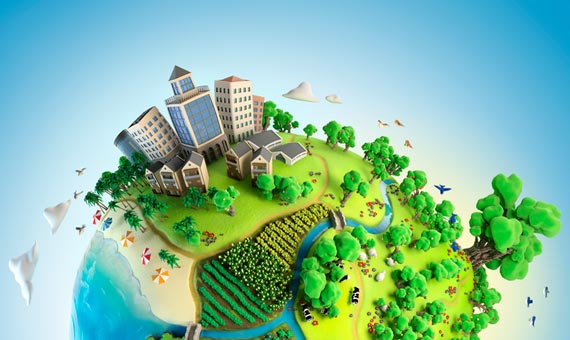
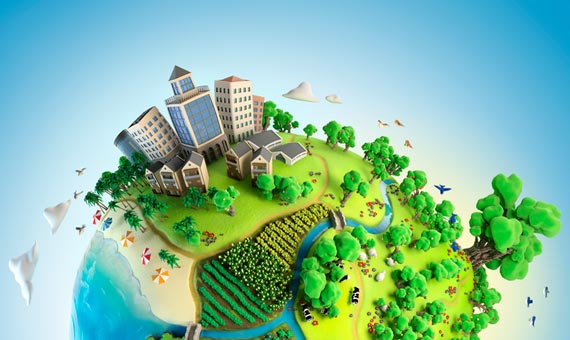

Medio ambiente

 1
1 2
2 3
3 6
6Día de la Tierra
Celebramos el Día Internacional de la Madre Tierra para recordar que el planeta y sus ecosistemas nos dan la vida y el sustento. Con esta celebración admitimos la responsabilidad colectiva, como nos recordaba la Declaración de Río de 1992, de fomentar la harmonía con la naturaleza y la Madre Tierra para alcanzar el equilibrio justo entre las necesidades económicas, sociales y medioambientales de las generaciones presentes y futuras. Este día nos brinda la oportunidad de concienciar a todos los habitantes del planeta acerca de los problemas que afectan a la Tierra y a las diferentes formas de vida que en él se desarrollan. En 2017, la campaña se denomina «Alfabetización medioambiental y climática». La educación constituye los cimientos del progreso. Necesitamos que la ciudadanía mundial conozca los conceptos sobre el cambio climático y sea consciente de la amenaza sin precedentes para el planeta. El conocimiento nos empoderará a todos y nos llevará a tomar medidas para defender el medio ambiente. La alfabetización medioambiental y climática no es solo el motor que genera votantes concienciados por las cuestiones ecológicas y promueve legislación en este ámbito, sino que también acelera el desarrollo de tecnologías y empleos respetuosos con el medio ambiente.

Día de la biodiversidad
¿Por qué un Día Internacional para la Diversidad Biológica? Si bien cada vez somos más conscientes de que la diversidad biológica en un bien mundial de gran valor para las generaciones presentes y futuras, el número de especies disminuye a un gran ritmo debido a la actividad humana. La Convenio sobre la Diversidad Biológica es el instrumento internacional para la conservación de la diversidad biológica, la utilización sostenible de sus componentes y la participación justa y equitativa en los beneficios que se deriven de la utilización de los recursos genéticos, que ha sido ratificado por 196 países. Dada la importancia de la educación y la conciencia públicas para la aplicación del Convenio a todos los niveles, la Asamblea General proclamó el 22 de mayo, fecha de la aprobación del texto, Día Internacional de la Diversidad Biológica, mediante la resolución 55/201 de 20 de diciembre de 2000.
Día de la conciencia ambiental
Desde 1995, y por ley, se recuerda cada 27 de setiembre el "Día Nacional de la Conciencia Ambiental" en memoria de las personas fallecidas como consecuencia del escape de gas cianhídrico ocurrido en la ciudad de Avellaneda, Provincia de Buenos Aires, el 27 de septiembre de 1993. Uno de los temas centrales de las ciencias ambientales desde sus primeros momentos ha sido el estudio de la adquisición por la población de una “conciencia ambiental”, es decir, la formación de actitudes y comportamientos cuidadosos con el medio ambiente y los factores que facilitan u obstaculizan el desarrollo de estas orientaciones ecológicas, así como si existe una “base social” del ambientalismo con cierta estabilidad, esto es, grupos sociales ecológicamente conscientes e implicados, con un perfil social definido. Si bien la ecología puede servir de enfoque temático para los estilos de vida, ello no implica necesariamente que la vida cotidiana de los individuos con esta orientación se guíe sistemáticamente de acuerdo con criterios ecológicos. Los modos de afrontar los problemas ambientales atraviesan diferentes entornos sociales y que las representaciones cotidianas de los problemas medioambientales son inseparables de la responsabilidad colectiva e individual, de las perspectivas y el potencial para la acción.


 3
3 4
4 5
5


 
